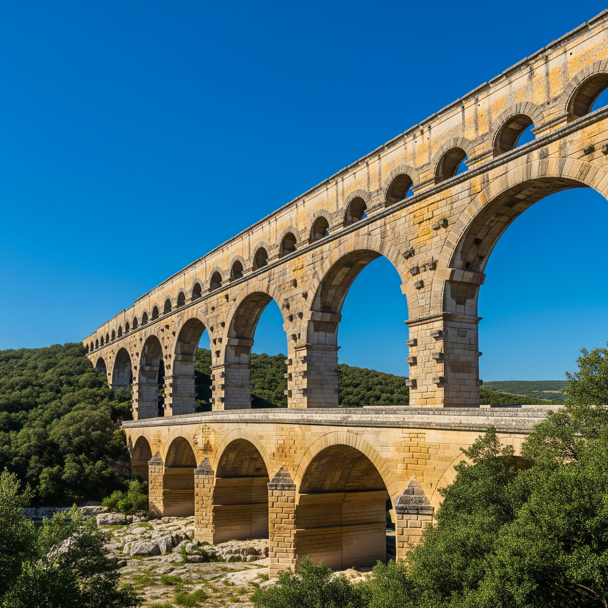
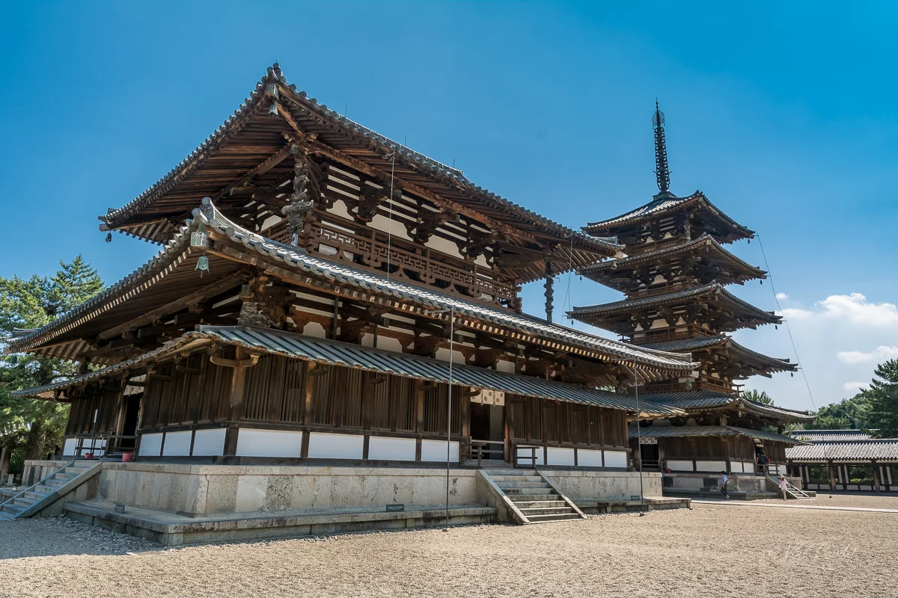
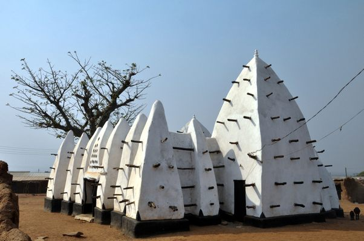
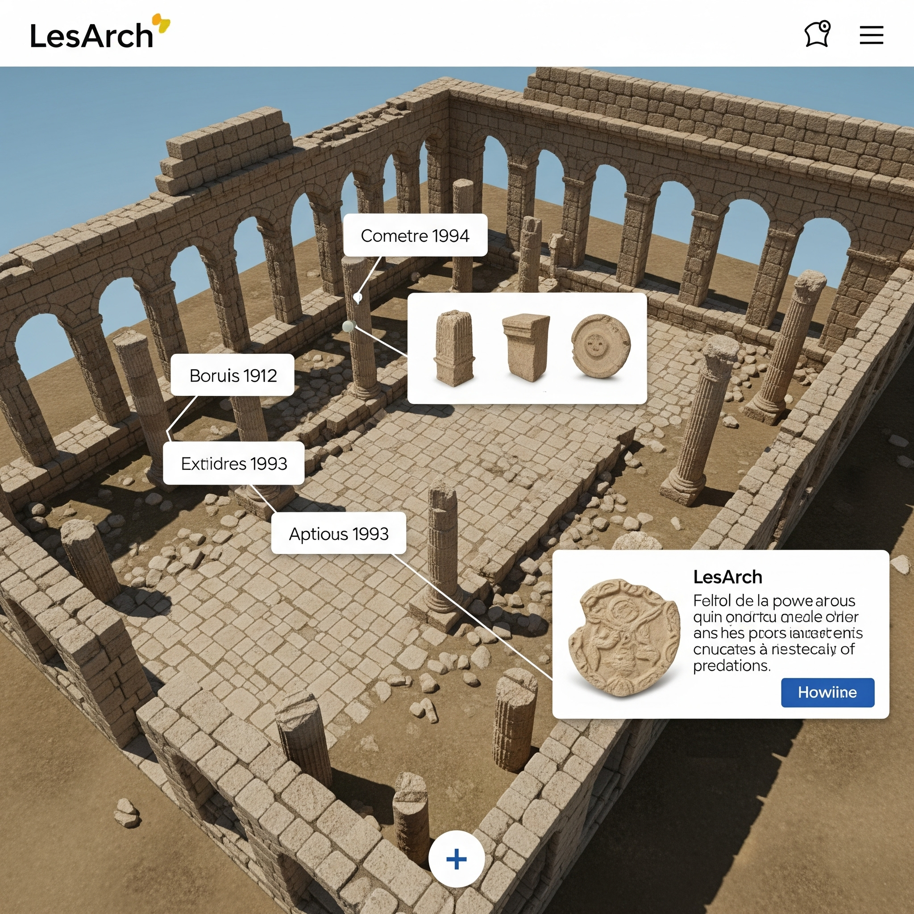

Our Projects
Delving into history through digital reconstruction and open data.
Here you can find detailed information about our current and upcoming 3D reconstruction projects, their archaeological significance, and how they contribute to open access data initiatives.

Pont du Gard: Roman Engineering Marvel
Status: Completed
The Pont du Gard is a monumental Roman aqueduct bridge that was part of a 50 km (31 mi) system supplying water to Nemausus (modern-day Nîmes). Our 3D model allows for an interactive exploration of its unique three-tiered structure, showcasing the precise engineering and construction techniques of the 1st century AD without the use of mortar.
Research Relevance: This project highlights the Roman Empire's advanced hydraulic engineering and urban planning, providing a digital twin for structural analysis and public education on classical architecture.

Asuka Dera Temple: Japan's First Buddhist Temple
Status: In Progress
Asuka-dera, or Hōkō-ji, marks the official introduction of Buddhism to Japan in the 6th century AD. Our ongoing 3D reconstruction aims to visualize its original grand complex, which was pivotal in Japan's cultural and political transformation. The model will help in understanding early Japanese Buddhist architectural styles and their continental influences.
Research Relevance: This project contributes to the study of cultural diffusion and the evolution of religious architecture in East Asia, offering a virtual space for comparative analysis and public engagement with early Japanese history.

Larabanga Mosque: West African Heritage
Status: Planned (School Project)
The Larabanga Mosque, one of Ghana's oldest and most revered mosques, represents a unique example of Sudanic-Sahelian architectural style. This upcoming project, central to a school project, will involve on-site data collection to create a highly accurate and detailed 3D model, focusing on its construction, preservation challenges, and cultural significance.
Research Relevance: This project will provide critical documentation for a threatened heritage site, facilitate detailed architectural analysis, and contribute to the understanding of Islamic heritage in West Africa. It will serve as a case study for digital preservation strategies.

Petra: Al-Khazneh (The Treasury)
Status: Planned
Al-Khazneh, the iconic Treasury of Petra, is a masterpiece of Nabataean rock-cut architecture. Our planned project aims to create an immersive 3D experience of this ancient wonder, allowing users to appreciate its intricate facades and contextualize its role within the broader city of Petra.
Research Relevance: This project will support studies on Nabataean art and architecture, ancient water management systems, and the impact of tourism on heritage sites, offering a digital preservation tool.

Great Pyramid of Giza
Status: Planned
The Great Pyramid of Giza, one of the Seven Wonders of the Ancient World, stands as a testament to ancient Egyptian engineering and funerary practices. Our future 3D model will offer a detailed exploration of its exterior and theorized interior structures, providing insights into its construction and purpose.
Research Relevance: This project will aid in the study of ancient Egyptian construction techniques, monumental architecture, and the cultural significance of funerary complexes, serving as a valuable educational resource.